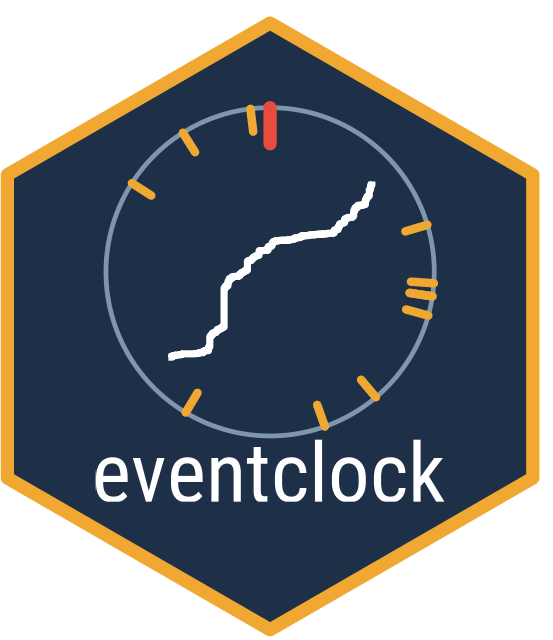

eventclock: The Event Clock: Information Time from Traded Event Probabilities
Source:R/eventclock-package.R
eventclock-package.RdMeasure information arrival ("event-clock time") ahead of scheduled events from traded event probabilities such as prediction market prices. Provides normalization of raw state prices into risk-adjusted event probabilities, realized-variation estimators of the information clock A based on the quadratic variation of log-odds (with truncation, bipower, and largest-move robustness variants and a real-time forecast rule), closed-form calculators for the exact logistic-normal transition law, simulation tools, plotting helpers, a connector for the public 'Polymarket' APIs, and the Brexit 2016 and U.S. election 2016 event-probability series that reproduce the headline estimates in Hanke, Schadner, Stöckl, and Weissensteiner (Working Paper) "Learning Before Scheduled Events: Prediction Markets, State Prices, and Option Valuation".
Author
Maintainer: Sebastian Stöckl sebastian.stoeckl@uni.li (ORCID)
Authors:
Sebastian Stöckl sebastian.stoeckl@uni.li (ORCID)